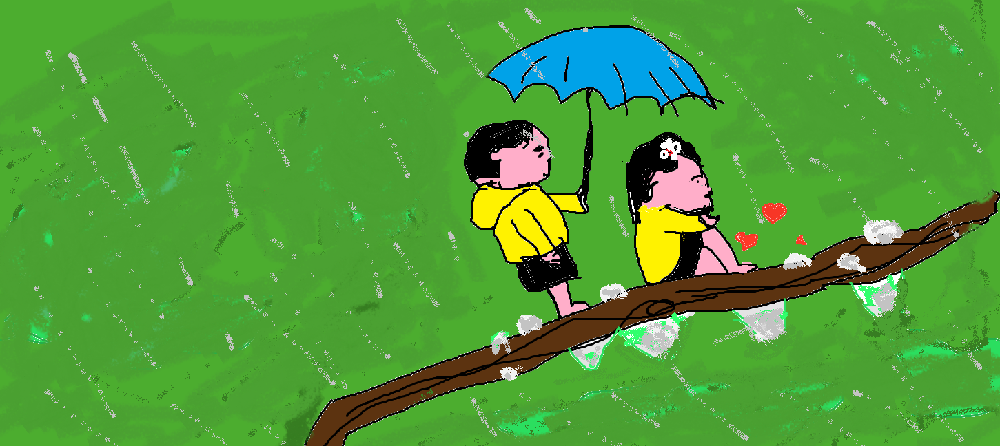

first(blue) para graph
my wweb 
this deleteinsertpara contains
lot of spaces
but browser will
mark ignore it. subscript
centered text
quote from c# website
Hello, this article is about how we can create a pie chart using Highchart in js. Pie charts are used to draw pie charts. Pie charts are very popular for showing a compact overview of a composition or comparison. Although they can be more difficult to read than bar charts, they remain a popular choice for small datasets.
the abbrivition HTML
written by john doe.the scream citeeee
this will be from left to right